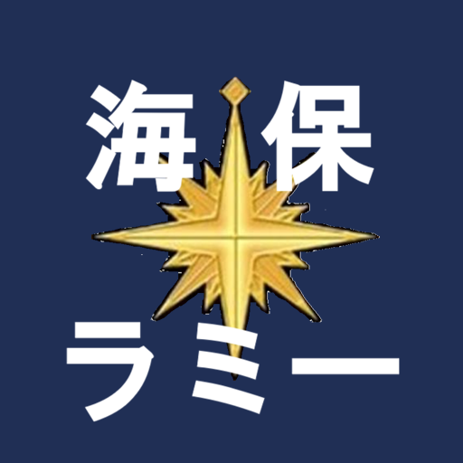
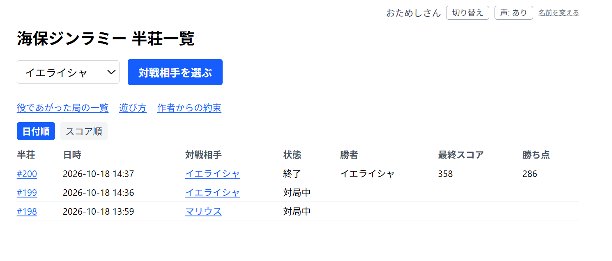
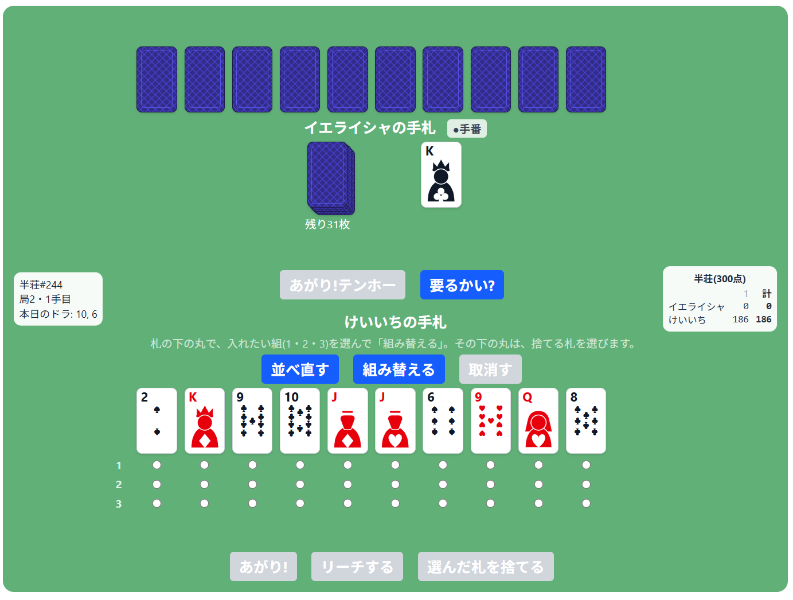
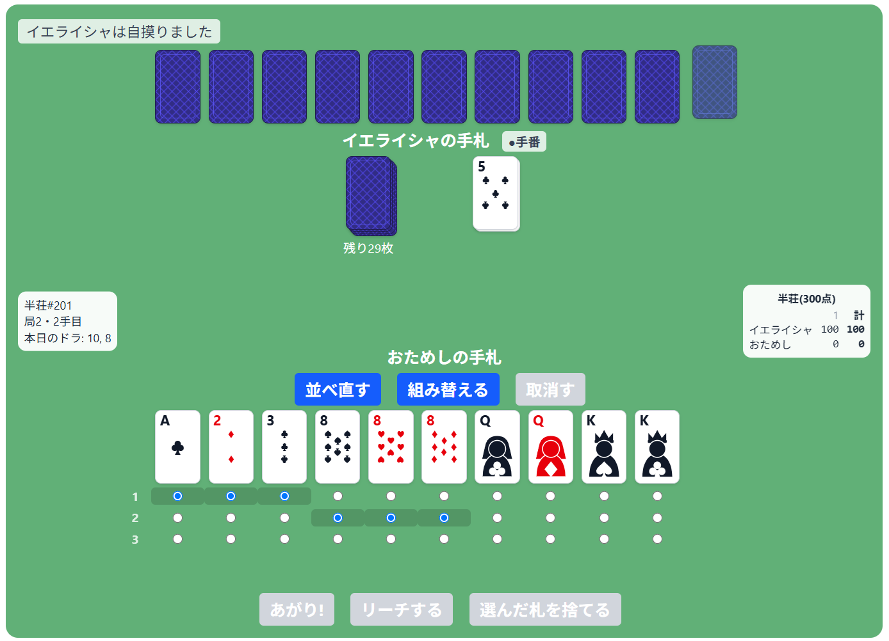
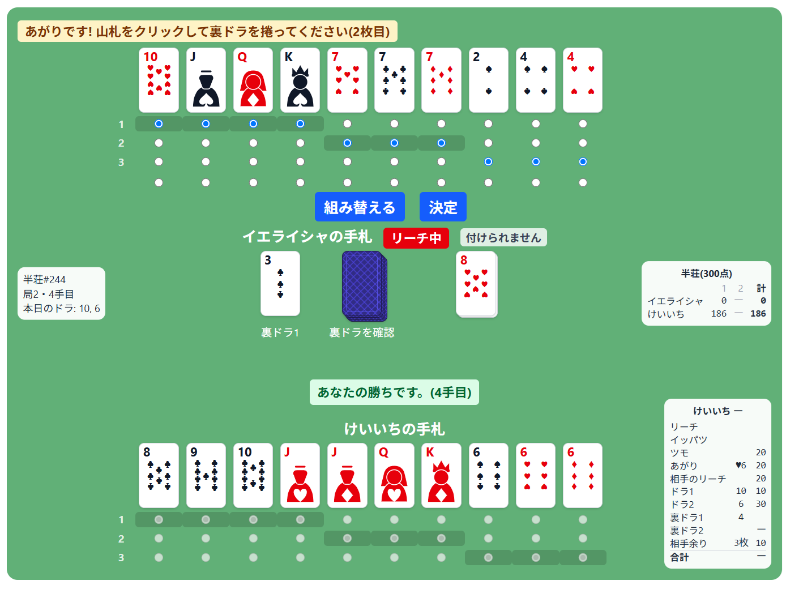

海保ジンラミー
海上保安庁が運輸省ビル最上階に引っ越した頃、流行っていた二人対戦麻雀トランプをコンピュータ相手にどうぞ。
海上保安庁で先輩に教わった、二人で遊ぶトランプ(当時は「麻雀トランプ」と呼ばれていました)を、ブラウザでコンピュータ相手に遊べるようにしました。名前を登録するだけで、すぐに対局できます。
半公開サーバが脆弱なので個別にご案内しています。ご希望の方はお問い合わせください。

海上保安庁が運輸省ビル最上階に引っ越した頃、流行っていた二人対戦麻雀トランプをコンピュータ相手にどうぞ。
海上保安庁で先輩に教わった、二人で遊ぶトランプ(当時は「麻雀トランプ」と呼ばれていました)を、ブラウザでコンピュータ相手に遊べるようにしました。名前を登録するだけで、すぐに対局できます。
半公開サーバが脆弱なので個別にご案内しています。ご希望の方はお問い合わせください。




点数の数え方など詳しいルールは、ゲーム内の「遊び方」ページにまとめてあります。
海上保安庁に在籍中、先輩から教わって覚えたトランプ遊びです。懐かしさもあってコンピュータ相手に一人でも遊べるようにしてみました。
マリウスを除くと対戦相手は、まったく手加減してくれません。油断なさらず。
― 店主 佐々木
ご質問、ご注文はこちらからご相談ください。